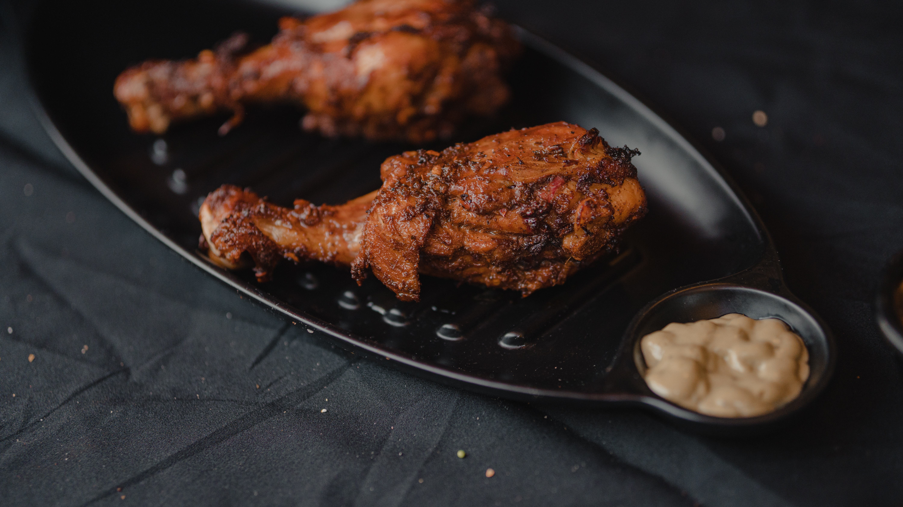

Grilled Chicken

Very simple hot, hot wings for grilling. Marinate your chicken in a simple hot sauce and grill up while basting those spicy wings with more of that sauce so that none goes to waste!
INGREDIENTS
- 1 (12 fluid ounce) bottle hot wing sauce (such as "Louisiana"® Wing Sauce)
- 24 chicken wings, or more as needed
STEPS
- Place wings in a glass or plastic bowl. Pour hot sauce over the wings; cover bowl with plastic wrap. Marinate in the refrigerator, stirring occasionally to coat, 2 to 12 hours.
- Preheat an outdoor grill for medium-high heat and lightly oil the grate.
- Place wings on the grill. Cook, occasionally turning and coating with leftover marinade, until chicken is no longer pink in the center, about 10 minutes. Continue grilling and turning until browned, 5 to 7 minutes more.